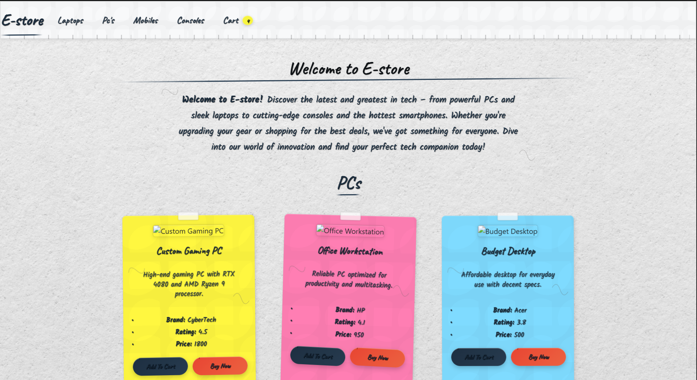
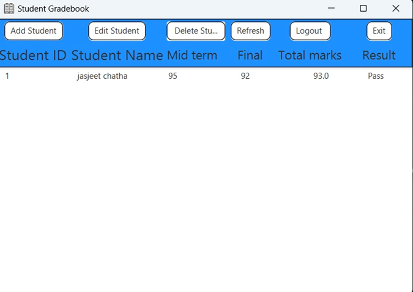
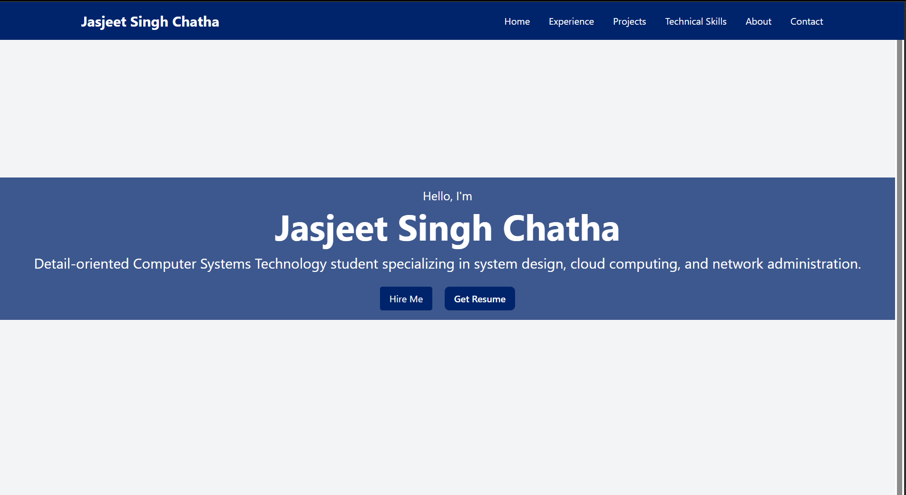

Projects

Full-Stack E-commerce Website (MERN)
A passion project I'm building from scratch using the MERN stack. It features product listings, add-to-cart functionality, and dynamic routing. The frontend is live on Vercel, and I'm actively working on the backend APIs and database.

AWS Cloud-Based Security Project
Deployed AWS EC2 instances using Python automation, implementing firewall configurations and access control policies. Future plans include AWS Lambda integration for automated security responses.
YouTube Music Playlist Downloader
Built a simple Python app with a GUI to download YouTube Music playlists offline without Premium. Designed for personal use, it's reliable, hassle-free, and powered by yt-dlp. Next up: progress bar and format options!

Student Data Management System
Java-based GUI application that streamlines student record management, reducing data retrieval time by 50% while ensuring secure access with MySQL.

Lawyer Information Management System
Secure, role-based access application built with Spring Boot and MySQL, optimizing legal data management and reducing manual entry time by 30%.

Portfolio Website
Responsive website showcasing projects and secure coding practices to enhance professional online presence.